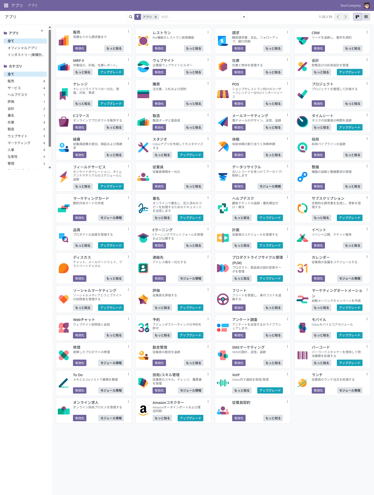

本リポジトリのドキュメント（Markdown記法）をブラウザで正しく閲覧し、図解（Mermaid）を表示させるために、ブラウザ拡張機能 「Markdown Viewer」 のインストールと設定を推奨しています。
お使いのブラウザに合わせて、以下のリンクからインストールしてください。
PC上のファイルをブラウザで開くために、以下の設定を行ってください。
ドキュメント内のチャートを表示するために必要です。
設定完了後、この README.md
ファイルをブラウザにドラッグ＆ドロップすることで、整形されたレイアウトで閲覧可能になります。
本リポジトリは、企業の基盤システム（ERP）向けのオープンソース「Odoo」の日本語対応Docker環境を提供しています。
ローカル環境において、簡単に日本語対応のOdooを立ち上げることが可能です。
Odoo（旧OpenERP）は販売（CRMを含む）機能に加えて、会計、在庫管理、製造、人事、eコマースなど、企業の基幹業務を支える多様な機能を備えており、 この環境を活用することで、基盤システム全般に関する理解とスキルの習得が可能です。

この環境は、新入社員や営業担当者向けの業務研修用教材として特に効果的です。 Odoo上で業務フローを実際に操作しながら学習できるため、実践的かつ体験型の教育が可能です。
mkdir odoo-jp
cd odoo-jp
curl -O https://raw.githubusercontent.com/8alfalfa8/odoo-jp-docker/refs/heads/main/docker-compose.yml
docker pull 8alfalfa8/postgres:latest
docker pull 8alfalfa8/odoo:latest
docker-compose up -ddocker ps # コンテナ一覧の確認
docker start <コンテナ名> # コンテナの起動
docker stop <コンテナ名> # コンテナの停止
docker restart <コンテナ名> # コンテナの再起動ブラウザで以下にアクセス：
http://localhost:8069/初回アクセス時、下記情報を入力してください： | 項目 | 値 | | ————— |
—————– | | Master Password | admin（必須固定値） | |
Database Name | odoo（必須任意値） | | Email |
aaa@bbb.com（必須任意値、ログインIDのため、メモを取ってください）
| | Password |
odoo（必須任意値、ログインPWのため、メモを取ってください）
| | Phone Number | 00000000（必須任意値） | | Language |
Japanese / 日本語 | | Country | Japan | | Demo
Data | ✅ チェックを入れる |
「Create Database」ボタンを押下して完了です。
上記4.で登録した Email と Password を入力してログインしてください。
下記をご参照ください。 * https://www.odoo.com/documentation/18.0/ja/index.html
本ツール（odoo-jp-docker）は、ユーザーの利便性向上を目的として無償で提供されていますが、ご利用に際してはすべて自己責任でお願いいたします。
ご利用や、機能開発、環境構築のご支援をご希望の方は、下記までご連絡ください。
Colorful株式会社
〒151-0051
東京都渋谷区千駄ヶ谷3-51-10
PORTAL POINT HARAJUKU 607
info@colorful-inc.jphttps://colorful-inc.jp/
本リポジトリは LGPLv3 ライセンス のもとで公開されています。
├── LICENSE
├── README.md
├── all_menu.png
├── docker-compose.yml
└── index.html
0 directories, 5 files
{kind=link}